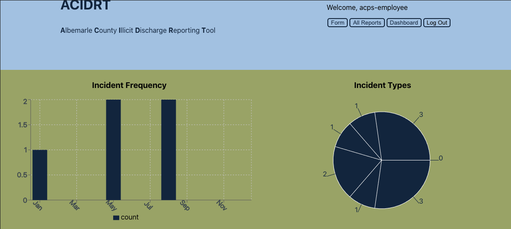
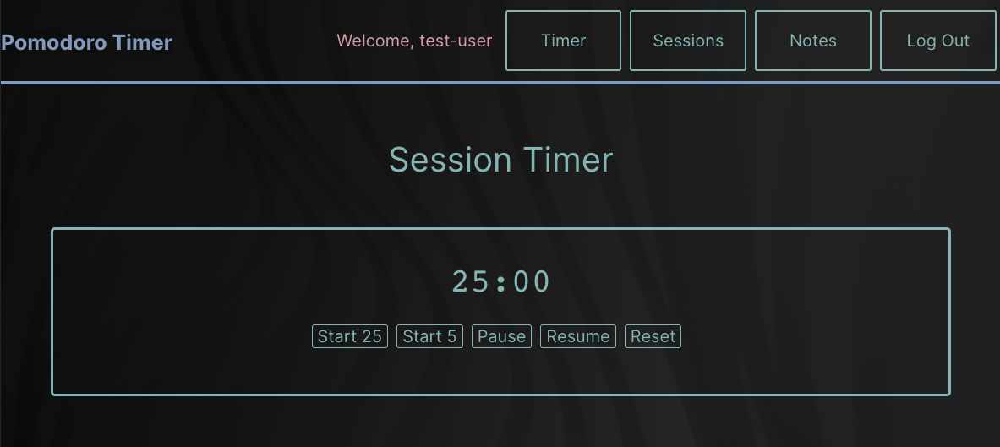
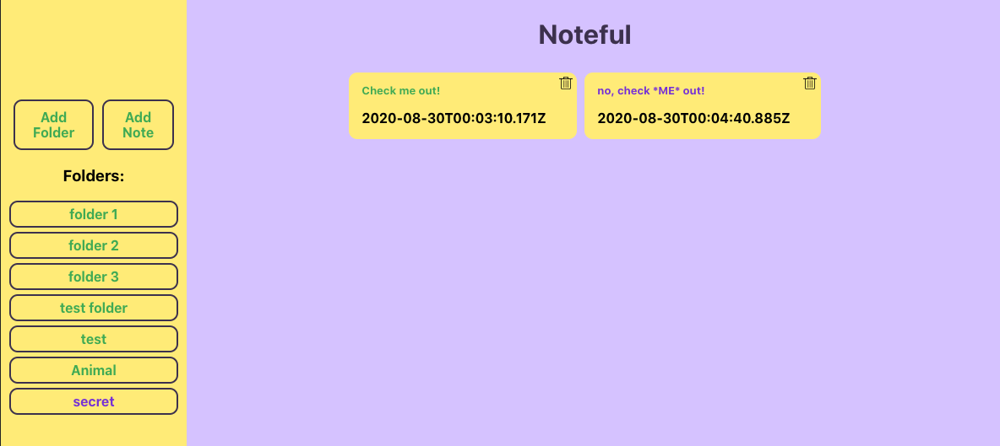
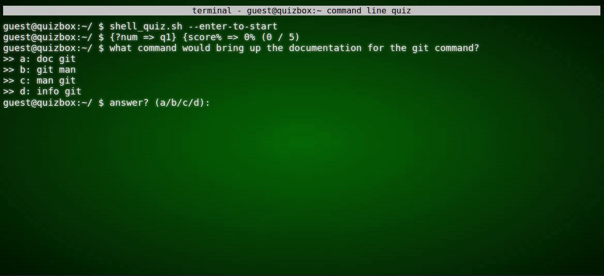
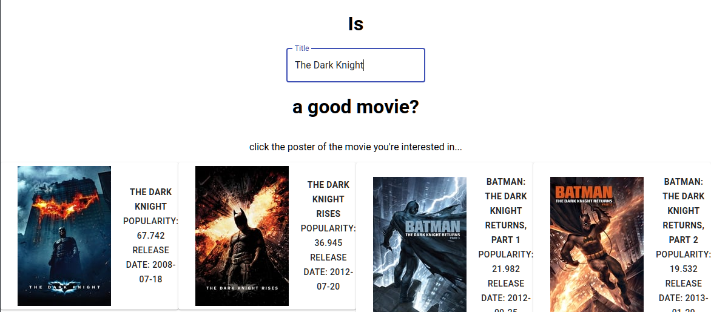
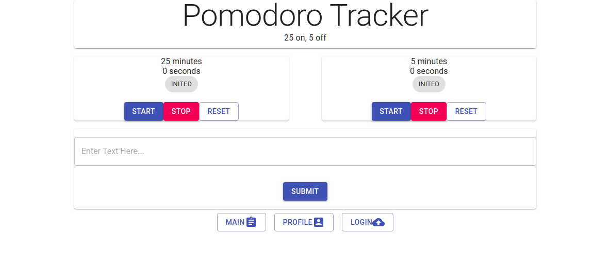

About Me
Hi, I'm Alex. I'm a full-stack developer, with particular interest in React.
I'm currently a employed with Sigora Solar, working with and learning about
Kubernetes, AWS, GraphQL, Apache Cordova, Sentry, Cypress, and of course, React.
I'm helping develop and maintain their internal tools intended to be deployed
to various mobile platforms. I really enjoy the puzzle of designing and
implementing asynchronous code and its associated data flow. I also enjoy
front-end UI design and implementation.
If I'm not working, I'm tinkering with personal coding projects, and building
computers. If I'm not at the computer, I'm at the gym or playing card games,
frisbee, or making music.
Projects
ACIDRT
ACIDRT ( Albemarle Country Illicit Discharge Reporting Tool ) is a reporting tool that is my answer to the prompt given to me by my local municipality a few years ago at a civic innovation event, where people of all background gathered to attempt to solve problems facing the community at large. The web app provides a form for illicit discharge reporting, including the ability to precisely place a map pin at the location of the incident. The app also provides a fully-featured interface and dashboard for employees of the municipality in order to see data at a glance, or edit and delete reports. The app uses a home-built api found here
git live site
live sitetech used


Pomdoro V2
This app focuses around the main pomodoro functionality, revisiting the first version of the pomodoro app, which was the first React-based project I ever completed. This app includes the ability to log session, as well as log and keep notes of which the first is displayed on the timer screen when logged in, intended to act as a mindful note section, for forumlae, etc. The login functionality, unlike the first Pomodoro app, isn't a drop-in component requiring a google account, but a homemade - making a call to the API built for this project, found here.
git
live sitetech used
Noteful
This app is mini-project. The point of the app is to provide a communal note taking space. Notes are sorted into folders, and all folders are accessible to any user as no authentication is required. The API was developed by following a set of instructions, but can be found here.
git
live sitetech used
Unix Shell Quiz
A 5-question quiz to test your familiarity with Unix or *nix-like shells. The quiz varies from easy to moderate difficulty. The quiz's UI is meant to evoke an old-school terminal and should be navigated with a keyboard.
git
live sitetech used

Movie Review App
React app to research various ratings for movies. Allows for incomplete title names. Displays results in a grid and aggregates results from OMDb and TMDb (open, free alternatives to IMDB) which displays from various review sources across the web. (first javascript project I completed)
git
live sitetech used
Pomodoro V1
React app to enable the use of the pomodoro method of time management. The two timers are preset to track the work periods (25 minutes) and the rest periods (5 minutes). The app uses Google's firebase and oAuth to allow the option for persistent completed task logging. The app is still usable without being logged in. This app was a 2-person effort.
git
live sitetech used